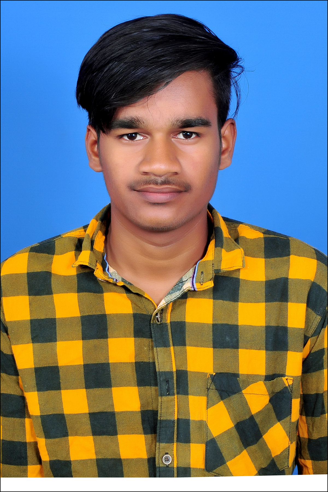

Resume

S Sandeep Kumar
Mob:- +91-7989095860
Email Id:- sandy798909@gmail.com
OBJECTIVE
To pursue a challenging career in any reputed organization which gives me enough scope
to prove myself and to enhance my knowledge and skills in order to develop the organization.
ACADEMIC PROFILE
| Course |
School/College |
Year of Passing |
Percentage |
| BTech |
Kuppam Engineering College |
2023 |
60 |
| Diploma |
Kuppam Engineering College |
2020 |
78 |
| SSC |
A P Model School |
2017 |
78 |
TECHNICAL SKILLS
Tools :
MS Office(MS word,Excel,PowerPoint)
Operating System :
Windows 10
Programming Languages:
Python, Basics of Java,Basics of C
PROJECT
SMART TRAFFIC MANAGEMENT SYSTEM USING IOT:
A model to effectively solve the above on mentioned problems by using Internet of Things
(IoT) is proposed. We use cloud for internet based on computing, where different services such as server,
storage and application are delivered for traffic management.
Minimize A smart trac management system utilizing sensor data, communication and automated
algorithms is to be developed to keep trac owing more smoothly.
REQUIREMENTS:
- Microcontroller (Arduino Mega 2560)
- IR Sensor
- Arduino IDE
- Proteus Design Suite
CO-CURRICULAR ACTIVITIES
Courses:
- Learning programming with python from Udemy
- Completed signal generation in MATLAB.
Workshops:
- Attended one-week workshop in APSSDC/Siemens on "Electronics (Home)Foundation","Electronics-Office-Foundation" conducted at Kuppam Engineering College
- Attended two-days workshop on soft skills conducted at Kuppam Engineering College
- Attended one-day workshop on Entrepreneurship conducted at Kuppam Engineering College.
ACHIEVEMENT & CERTIFICATIONS
- Cisco Routing and Switching
- Cisco Basics and Intermediate
- Basics of Matlab
- Cloud riders-2020 powered by AWS
SOFT SKILLS
- Team player
- Self Motivator
- Analytical mind
- Ability to develop strong working relationships
PERSONAL DETAILS
Name: S Sandeep Kumar
Date of Birth :20/06/2002
Father’s Name : G Saravan Kumar
Mother’s Name : S Saraswathi
Languages Known : English, Telugu ,Tamil
Nationality : Indian
Permanent Address : #4/135, Gudlakadhirepalli(V), Vendugampalli(P), Kuppam(M), Chittoor(Dist), AndhraPradesh517425.
DECLARATION
I hereby declare that the information furnished above is true to the best of my knowledge and
belief.
S Sandeep kumar
Signature